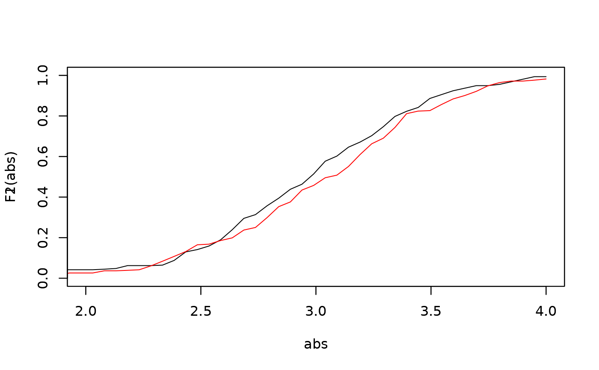

Estimates the decontaminated CDF of the unknown component in an admixture
Source:R/decontaminated_density.R
decontaminated_cdf.RdEstimates the decontaminated cumulative distribution function (CDF) of the unknown component in an admixture model, using inversion of the admixture CDF. Recall that an admixture model follows the cumulative distribution function (CDF) L, where L = p*F + (1-p)*G, with g a known CDF and p and f unknown quantities.
Arguments
- sample1
Observations of the sample under study.
- estim.p
The estimated weight of the unknown component distribution, related to the proportion of the unknown component in the admixture model studied.
- admixMod
An object of class 'admix_model', containing useful information about distributions and parameters.
Details
The decontaminated CDF is obtained by inverting the admixture CDF, given by L = p*F + (1-p)*G, to isolate the unknown component F after having estimated p. This means that F = (1/hat(p)) * (hat(L)-(1-p)*G).
Author
Xavier Milhaud xavier.milhaud.research@gmail.com
Examples
## Simulate mixture data:
mixt1 <- twoComp_mixt(n = 400, weight = 0.4,
comp.dist = list("norm", "norm"),
comp.param = list(list("mean" = 3, "sd" = 0.5),
list("mean" = 0, "sd" = 1)))
mixt2 <- twoComp_mixt(n = 300, weight = 0.6,
comp.dist = list("norm", "norm"),
comp.param = list(list("mean" = 3, "sd" = 0.5),
list("mean" = 5, "sd" = 2)))
data1 <- getmixtData(mixt1)
data2 <- getmixtData(mixt2)
## Define the admixture models:
admixMod1 <- admix_model(knownComp_dist = mixt1$comp.dist[[2]],
knownComp_param = mixt1$comp.param[[2]])
admixMod2 <- admix_model(knownComp_dist = mixt2$comp.dist[[2]],
knownComp_param = mixt2$comp.param[[2]])
## Estimation:
est <- admix_estim(samples = list(data1,data2),
admixMod = list(admixMod1,admixMod2), est_method = 'PS')
prop <- getmixingWeight(est)
## Determine the decontaminated version of the unknown CDF by inversion:
F1 <- decontaminated_cdf(sample1 = data1, estim.p = prop[1], admixMod = admixMod1)
F2 <- decontaminated_cdf(sample1 = data2, estim.p = prop[2], admixMod = admixMod2)
abs <- seq(from=-1, to=4, length.out=100)
plot(x=abs, y=F1(abs), xlim=c(-1,4), ylim=c(0,1), type="l")
par(new = TRUE)
plot(x=abs, y=F2(abs), xlim=c(-1,4), ylim=c(0,1), type="l", col="red")
